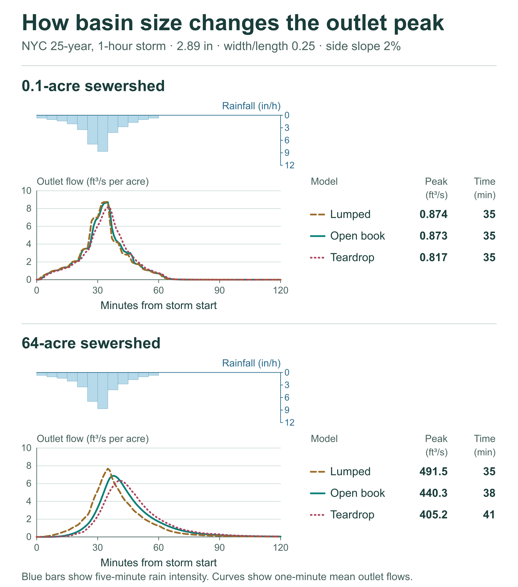

Lumped Runoff vs. Distributed Runoff — When Does the Lumped Approximation Hold?
When does one traditional SWMM subcatchment give a good estimate of the peak flow at the outlet and the time it arrives? The new OpenSWMM engine lets us test that question with two runoff models.
The lumped model is the traditional SWMM subcatchment. It treats the whole drainage area as one nonlinear reservoir. The distributed model is the 2D overland flow model implemented in the new OpenSWMM engine. It routes water across a mesh of the terrain. The open book and teardrop are two terrain shapes run with that same 2D model.
Try the 25-year storm on the long, narrow open book below. Increase the area from 0.1 to 64 acres and watch the crests separate. Then widen the basin and see whether the lumped model still gives the higher peak.
Open book
Teardrop
| Model | Peak (ft³/s) | Peak difference | Peak minute | Timing difference (min) | Mean arrival (min) |
|---|
Peak and timing differences are measured against the traditional SWMM subcatchment. Positive values mean a higher peak or a later arrival. Peak minute marks the end of the highest one-minute mean flow interval. Mean arrival weights each interval midpoint by its discharge volume.
| Model | Rain (m³) | Outlet at 1 h (m³) | Outlet at 8 h (m³) | 8 h difference | On 2D surface at 8 h (m³) | 2D balance residual (% of rain) |
|---|
With identical rainfall, equal area and zero losses, all three models should ultimately deliver the same volume. At hour eight, some water can still be draining. The final column independently checks the 2D rain ledger against measured outlet discharge plus water remaining on the mesh. It shows the absolute residual.
All scenario metrics (CSV) · Offline explorer · Reproducible model package
What one width represents
OpenSWMM’s new multiprocess, multiscale overland flow model lets us hold rainfall and area fixed while changing how water reaches the outlet. In the traditional SWMM subcatchment, one effective width helps determine how quickly the reservoir drains. In the 2D model, water travels down the hillsides, collects in the valley and leaves through an opening of finite width.
Imagine opening a book flat enough that both pages slope toward the binding. The pages are the hillsides. Tilt the binding and water has a second journey, down the valley to the outlet. In our rectangular basin the equivalent SWMM width is twice the valley length, so area divided by equivalent width gives the lateral travel distance across half a page. The lumped model uses that distance, slope, roughness and stored depth to set discharge. One reservoir cannot say where on the page the water started or how far it has left to travel along the binding. The distinction between mapped width and effective hydraulic width is central to the SWMM formulation and to Guo and Urbonas’s watershed-shape analysis. EPA hydrology reference, chapter 3 · Guo and Urbonas (2009).
The teardrop encloses the same area with the same bounding width/length ratio. Its sides taper to a toe just 5% of its maximum width. The outlet occupies a quarter of each shape’s downstream edge, so the teardrop has a narrower opening. Its hydrograph includes the effects of both the footprint and the outlet constriction. All cases use Manning’s n of 0.030 and start dry. The valley grade is one quarter of the selected side slope. We measure discharge before it enters any sewer.
What changes with the storm?
At the New York City point (40.7128° N, 74.0060° W), NOAA Atlas 14 gives one-hour depths of 1.68, 2.89 and 3.60 inches for the 2-, 25- and 100-year storms. We distribute each total across the same twelve five-minute blocks, with the most intense block at minutes 30–35. This synthetic pattern lets us change depth while holding duration and shape fixed. The assigned return period applies to the one-hour rainfall total. Each simulated outlet peak is conditional on this particular storm shape. NOAA point estimates · Archived source data.
Hold the 64-acre elongated basin at 0.5% side slope and change the return period. The teardrop peak falls 46%, 59% and 63% below the corresponding lumped peak, and arrives 18, 23 and 28 minutes later. That trend applies to this footprint, outlet and storm pattern. Ghosh and Hellweger found that the direction of peak bias with spatial aggregation changed between smaller and larger observed storms in their urban catchment. In their study infiltration also mattered. We deliberately switch infiltration, evaporation and depression storage off here to isolate surface routing. Ghosh and Hellweger (2012).
When does lumping work for an outlet decision?
Suppose the decision can tolerate a 10% peak difference and a five-minute timing difference. These are example tolerances. Under the 25-year storm, with width/length 0.25 and a 2% side slope, the 0.1-acre lumped model gives 0.874 ft³/s at minute 35. The open book gives 0.873 ft³/s and the teardrop 0.817 ft³/s, both in the same minute. On this mesh, lumping meets both criteria for both surfaces. When we double the mesh resolution in each direction, the open-book peak stays within 0.4% of the lumped result. The finer teardrop peak is 18.8% lower than lumped, crossing the example tolerance. Even on a small site, the outlet geometry and its resolution can change the answer.

At 64 acres the lumped peak is 491.5 ft³/s at minute 35. The open book delivers 440.3 ft³/s at minute 38, and the teardrop 405.2 ft³/s at minute 41. The open book exceeds the illustrative peak tolerance. The teardrop exceeds both tolerances. A downstream decision that depends on coincidence with another inflow would need the arrival times as well as the magnitudes. Broekhuizen and colleagues likewise found validation events in which modeled peak and volume agreed with observations while the timing differed. Broekhuizen et al. (2020), section 3.3.1.
The sign can reverse. In the 64-acre, 2-year storm on a 0.5% side slope, the elongated open book peaks 28% below lumped SWMM. Change width/length from 0.25 to 4 and its peak is 60% above. Making the book wider increases the lateral distance represented by the lumped reservoir while shortening the valley resolved by the 2D model. An acreage cutoff alone misses that change.
Across all 108 comparisons against lumped SWMM, the baseline 2D peaks range from 66.8% lower to 60.3% higher. Peak times range from the same minute to 28 minutes later. Eight-hour outlet volumes differ by −0.53% to +1.94%. If the question is where water ponds, which inlet receives it first or how deep a street floods, one subcatchment cannot return those spatial results. For a question about the outlet alone, specify the peak and timing tolerances and test the range of relevant events.
What the water balance can tell us
The 64-acre, 25-year storm supplies 19,012 m³. In the elongated open book with 2% side slopes, 19,007 m³ have left by hour eight and 5.33 m³ remain on the surface. The 2D outlet and storage together account for the rainfall to rounding. This checks mass conservation across the new surface calculation. A model can pass that check and still deliver the peak several minutes early or late.
Mesh sensitivity and the limits of this comparison
The matrix comprises 54 combinations and 162 native OpenSWMM runs. The open-book mesh has 128 triangles and the teardrop 160. Their folds and outlet endpoints are explicit. Holding topology fixed across scales changes physical cell size. We repeated both distributed models in four selected cases with twice the resolution in each direction. For the 64-acre, elongated, 25-year case at 2% slope, refinement lowered the open-book peak a further 12.8% and moved it two minutes later. The teardrop peak rose 0.9% and moved four minutes later. Exact percentages and threshold classifications near a cutoff are sensitive to discretization. The matrix compares these idealized models. Establishing suitability for a real site requires observed events and the accuracy needed for the decision. Numerical checks and refinement results.
Reproduce the simulations and compare the earlier experiment
Each model runs for eight hours. The 2D models use the full shallow-water equations with second-order reconstruction. One-minute flow comes from differences in the native cumulative outlet ledgers. Each slider stop selects a completed combination. The download package includes native records, reports, the exact input generator, storm depths, mesh-refinement results and the matrix summary.
The previous edition used the 25-year, 24-hour NYC storm on 0.1- and 0.3-acre basins with a common 1 m² maximum cell area. Its broader rainfall crest gave the small basins time to approach the rainfall supply rate. That distinct experiment and the original 64-acre diagnostic are available for comparison. Previous 24-hour study and offline report · Historical input audit.
Acknowledgment
I used OpenAI Codex to help draft and revise this article and to write the code that prepared the model inputs, generated the figures, and built the interactive explorer. OpenSWMM computed the runoff results shown here.